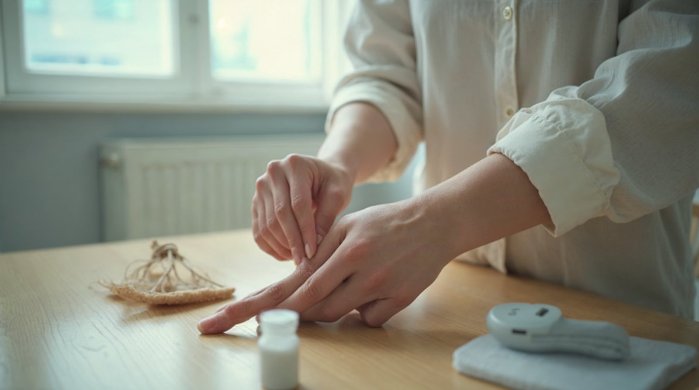
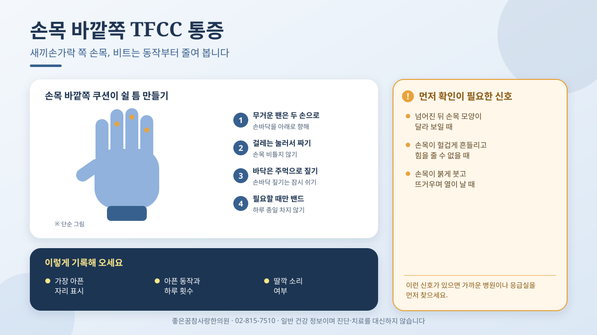

이종호 한의사 감수좋은꿈참사랑한의원 대표원장 (한의사 면허번호 19769)발행 2026-11-26 · 수정 2026-11-26
이 글의 차례
프라이팬을 한 손으로 들어 기울이는데 손목 바깥쪽, 새끼손가락 쪽 뼈 옆이 찌릿합니다. 걸레를 비틀어 짤 때도, 팔굽혀펴기를 하려고 바닥을 짚을 때도 같은 자리가 시큰하고, 손목을 돌리면 안에서 딸깍 소리가 나는 것 같기도 합니다.
손목 통증이라고 하면 흔히 엄지 쪽이나 손목 한가운데를 떠올리시지만, 진료실에서는 새끼손가락 쪽 손목이 아프다는 분도 꽤 자주 만납니다. 그런데 이 자리는 정확히 어디가 아픈지 설명하기가 어려워서, "그냥 손목 바깥이 이상해요"라고 말씀하시는 경우가 많습니다.
이 자리에는 TFCC라고 부르는 작은 구조물이 있습니다. 우리말로는 삼각섬유연골복합체라고 하는데, 이름이 길고 낯설어서 진료실에서는 '손목 바깥쪽 쿠션'이라고 풀어서 설명드리곤 합니다.
오늘은 이 손목 바깥쪽 쿠션이 무슨 일을 하는지, 왜 다치는지, 비슷한 다른 손목 통증과 어떻게 구분해 보는지, 그리고 일상에서 무엇을 조심하고 한의원에서는 무엇을 함께 살피는지 차근차근 말씀드려 보겠습니다.
TFCC는 어떤 일을 하는 구조인가요?
팔뚝에는 엄지 쪽의 요골과 새끼손가락 쪽의 척골, 두 개의 긴 뼈가 있습니다. 손목에서 척골 끝과 손목뼈 사이에는 작은 틈이 있는데, 이 틈을 채우며 쿠션 역할을 하는 연골과 그 주변을 붙잡는 인대들을 묶어서 TFCC라고 부릅니다.
이 구조물은 두 가지 일을 합니다. 하나는 손으로 무언가를 짚거나 들 때 새끼손가락 쪽으로 실리는 힘을 받아 주는 완충 역할이고, 다른 하나는 손바닥을 위아래로 뒤집을 때 두 팔뚝 뼈가 흔들리지 않도록 붙잡아 주는 역할입니다.
그래서 TFCC가 다치면 손목을 새끼손가락 쪽으로 꺾거나, 손바닥을 짚고 체중을 실거나, 무언가를 쥐고 돌리는 동작에서 아픔이 두드러집니다. 손목 안에서 걸리는 느낌이나 딸깍 소리가 함께 나는 경우도 있습니다.
왜 손목 바깥쪽 쿠션이 다칠까요
TFCC가 다치는 길은 크게 두 가지입니다. 한 번의 큰 충격으로 다치는 경우와, 오랜 시간 조금씩 닳아서 약해지는 경우입니다. 진료실에서 만나는 분들은 이 두 가지가 섞여 있는 경우도 많습니다.
- 넘어지며 손바닥으로 바닥을 짚었을 때, 특히 손목이 바깥쪽으로 꺾인 채 짚었을 때
- 골프, 테니스, 배드민턴처럼 손목을 강하게 비트는 운동을 할 때
- 프라이팬 들기, 걸레 짜기, 드라이버 돌리기처럼 비틀며 힘을 주는 일을 반복할 때
- 팔굽혀펴기, 요가의 손 짚는 자세처럼 손목을 젖힌 채 체중을 오래 실을 때
- 마우스를 쓸 때 손목을 바깥쪽으로 꺾은 자세가 습관이 되었을 때
나이가 들면서 이 연골이 조금씩 얇아지는 것도 자연스러운 변화입니다. 또 사람마다 척골의 길이가 조금씩 달라서, 척골이 상대적으로 긴 분은 이 자리에 힘이 더 많이 실려 같은 일을 해도 더 쉽게 불편해질 수 있습니다.
한의학에서는 반복해서 쓰인 관절 주변에 기혈이 머물고, 근육과 힘줄이 굳어 관절을 받쳐 주는 힘이 약해진 모습으로 봅니다. 그래서 아픈 자리만이 아니라 팔뚝과 팔꿈치, 어깨까지 이어지는 힘의 흐름을 함께 살피려고 합니다.
다른 손목 통증과는 어떻게 다른가요?
손목은 작은 관절이 촘촘히 모인 곳이라, 아픈 자리가 조금만 달라도 살펴볼 방향이 달라집니다. 처음 오시면 아래와 같이 나누어 구분해 봅니다.
- 엄지 쪽 손목 통증: 엄지를 쥐고 손목을 새끼손가락 쪽으로 꺾을 때 아프다면 엄지 쪽 힘줄이 붓는 드퀘르뱅 건초염을 먼저 생각합니다.
- 손목 한가운데와 손가락 저림: 엄지부터 약지 절반까지 저리고 밤에 깨신다면 손목터널증후군을 살펴봅니다.
- 손목 바깥쪽 힘줄 통증: 새끼손가락 쪽 손등 위 힘줄이 붓고 손목을 젖힐 때 아프다면 힘줄 자체의 염증일 수 있습니다.
- 말랑한 혹: 손등이나 손목에 말랑한 혹이 만져진다면 결절종을 생각합니다.
TFCC 통증은 새끼손가락 쪽 손목뼈 바로 옆, 손등보다는 옆면에서 조금 아래쪽 오목한 자리를 눌렀을 때 아픈 경우가 많습니다. 손바닥을 위로 뒤집은 채 무거운 것을 들 때 더 불편하다는 것도 흔한 특징입니다.
여러 원인이 겹쳐 있는 경우도 있습니다. 예를 들어 넘어진 뒤 엄지 쪽과 새끼손가락 쪽이 함께 아프다면 두 자리를 모두 살펴야 합니다. 그래서 아픈 자리를 정확히 짚는 일이 진찰의 첫걸음입니다.

집에서 스스로 짚어 보는 방법
먼저 손바닥이 아래를 향하게 책상 위에 손을 올려 보세요. 새끼손가락 쪽 손목에서 툭 튀어나온 뼈를 찾고, 그 바로 아래 손바닥 쪽으로 살짝 내려온 오목한 자리를 반대쪽 엄지로 가볍게 눌러 봅니다. 평소 아프던 그 느낌이 그대로 난다면 기록해 두세요.
다음으로 의자 팔걸이를 손바닥으로 짚고 일어나 보세요. 이때 손목 바깥쪽이 찌릿하다면 체중이 실릴 때 아픈 것입니다. 수건을 양손으로 잡고 비틀어 짤 때 어느 쪽 손목, 어느 자리가 아픈지도 확인해 보시면 좋습니다.
이런 점검은 정확한 진단을 대신하지는 않지만, 진료실에서 어떤 동작이 불편한지 설명하실 때 큰 도움이 됩니다. 아픔을 일부러 끌어내려고 세게 반복하지는 마시고, 한두 번 확인하는 정도로만 해 주세요. 양쪽 손목을 같은 방법으로 비교해 보시면 차이가 더 잘 느껴집니다.
먼저 이렇게 여쭙니다
처음 오시면 저는 대략 이런 순서로 여쭙니다. 미리 생각해 오시면 이야기가 훨씬 수월해집니다.
- 가장 아픈 자리는 정확히 어디인가요? 손가락 하나로 짚어 주세요.
- 넘어지며 손을 짚었거나 손목을 다친 일이 있었나요?
- 어떤 동작에서 아픈가요? 문고리 돌리기, 바닥 짚기, 프라이팬 들기, 걸레 짜기 중에서요.
- 손목을 돌릴 때 딸깍 소리나 걸리는 느낌이 있나요?
- 하시는 일이나 운동에서 손목을 비트는 동작이 많은가요?
- 새끼손가락이나 약지가 저린 느낌이 함께 있나요?
- 엑스레이나 다른 영상 검사를 받아 보셨나요?
새끼손가락과 약지 저림이 함께 있다면 팔꿈치 안쪽을 지나는 신경 문제도 함께 생각해 봐야 합니다. 그래서 손목만 보지 않고 팔꿈치와 목까지 짚어 보는 경우가 있습니다.
일상에서 먼저 해 볼 수 있는 것
TFCC는 혈액이 잘 닿지 않는 구조라서 회복에 시간이 걸리는 편입니다. 그래서 아픈 동작을 줄이며 손목이 쉴 틈을 만들어 주는 것이 가장 중요한 첫걸음입니다.
- 무거운 냄비나 프라이팬은 두 손으로, 손바닥을 아래로 향한 채 들기
- 걸레나 빨래는 손목을 비틀지 말고 눌러서 물기를 빼기
- 바닥을 짚고 일어날 때는 손바닥 대신 주먹을 쥐고 짚기
- 마우스를 쓸 때 손목이 새끼손가락 쪽으로 꺾이지 않게 위치 맞추기
- 팔굽혀펴기나 요가의 손 짚는 자세는 아픔이 가라앉을 때까지 쉬기
- 손목 바깥쪽을 감싸 주는 얇은 보호대를 손을 많이 쓰는 시간에만 차기
TFCC 전용으로 나온 손목 밴드는 손목 바로 위를 감싸 두 팔뚝 뼈를 가볍게 모아 주는 방식입니다. 일을 할 때 차면 도움이 되는 분이 많지만, 하루 종일 차고 있기보다는 필요한 시간에만 쓰시길 권합니다.
아픔이 가라앉기 시작하면 팔뚝 근육을 부드럽게 쓰는 연습을 시작합니다. 팔꿈치를 몸에 붙이고 가벼운 물병을 쥔 채 손바닥을 천천히 위아래로 뒤집는 동작을 아프지 않은 범위에서 해 보세요. 하루 두 번, 10번씩이면 충분합니다.
일하면서 손목을 쉬게 하는 작은 요령
요리를 하시는 분이라면 무거운 팬을 흔드는 대신 주걱으로 저어 주시고, 큰 냄비는 가스레인지 위에서 옮기지 말고 국자로 덜어 내 보세요. 손목이 한 번 덜 비틀릴 때마다 쿠션이 쉴 시간이 조금씩 늘어납니다.
사무실에서 일하신다면 마우스를 몸 가까이 두고, 손목이 아니라 팔꿈치에서부터 움직인다는 느낌으로 써 보세요. 키보드 앞쪽에 얇은 받침을 두면 손목이 바깥쪽으로 꺾이는 각도가 줄어듭니다.
아이를 키우시는 분은 아이를 안아 올릴 때 손목으로 받치기보다 팔뚝 전체로 감싸 안는 쪽이 부담이 적습니다. 한 시간에 한 번쯤 손을 털고 손목을 천천히 돌려 주는 짧은 쉼도 도움이 됩니다.
회복을 더디게 만드는 습관이 있습니다
손목 바깥쪽이 아픈 분들 가운데는 아픈데도 손목을 자꾸 돌려서 딸깍 소리를 확인하는 습관이 생긴 분이 많습니다. 소리가 나면 시원한 것 같지만, 다친 쿠션을 계속 문지르는 셈이 되어 회복이 더뎌질 수 있습니다.
아픈 손을 아끼느라 반대쪽 손만 쓰다가 반대쪽 손목까지 불편해지는 경우도 있습니다. 일을 줄이기 어렵다면 두 손을 고루 쓰고, 비트는 동작은 도구의 도움을 받는 방법을 찾아보세요. 병따개, 고무장갑의 미끄럼 방지면처럼 작은 도구가 손목의 부담을 꽤 덜어 줍니다.
조금 나아졌다고 바로 예전의 운동 강도로 돌아가는 것도 흔한 실수입니다. 골프나 테니스를 다시 시작할 때는 연습량을 절반으로 줄이고, 다음 날 손목의 반응을 보며 조금씩 늘려 가세요.
한의원에서 함께 살필 수 있는 경우
- 손목 바깥쪽이 몇 주 넘게 시큰하고 비트는 동작에서 아픈 경우
- 정형외과에서 TFCC 손상이나 염증 이야기를 듣고 보존적으로 지켜보는 경우
- 손목을 아끼느라 팔뚝과 팔꿈치, 어깨까지 뻐근해진 경우
- 날이 차거나 손을 많이 쓴 날 손목이 더 묵직해지는 경우
- 운동이나 일로 돌아가기 전에 손목 상태를 점검하고 싶은 경우
좋은꿈참사랑한의원에 오시면 먼저 손목이 헐겁게 흔들리거나 크게 다친 신호가 없는지부터 봅니다. 그다음 맥을 짚고, 손목 바깥쪽을 직접 눌러 보며 아픈 자리와 불편한 동작을 확인합니다. 팔뚝과 팔꿈치 주변 근육의 긴장도 함께 봅니다.
진찰한 내용을 바탕으로 침, 약침, 온열 관리 가운데 지금 상태에 맞는 것을 고르고, 집에서 할 손목 관리와 움직임 연습을 함께 정합니다. 몸이 차고 회복이 더디다고 느끼신다면 한약 상담을 드리기도 하는데, 드시는 약을 먼저 확인하고 신중하게 정합니다.
손목이 헐겁게 흔들리거나 큰 손상이 의심되면 정형외과 진료를 함께 받으시도록 안내합니다. 이미 받고 계신 치료나 보호대 지시가 있다면 그대로 이어 가시면 됩니다. 임신 중이시라면 진료 전에 먼저 알려 주시고, 필요하면 산부인과와 상의하시도록 안내합니다.
이렇게 기록해 오시면 상담이 쉬워집니다
- 가장 아픈 자리(손목 그림에 점으로 표시해도 좋습니다)
- 아픈 동작 목록과 그 동작을 하루에 몇 번쯤 하는지
- 처음 아프기 시작한 때와 계기(넘어짐, 운동, 일)
- 딸깍 소리나 걸리는 느낌이 있는지
- 받으신 검사 결과지와 보호대, 약 등 해 본 것
특히 하루 중 손목을 비트는 일이 얼마나 되는지 적어 보시면, 생활에서 어디를 바꿀 수 있을지 함께 찾기가 훨씬 수월해집니다.
일주일 정도만 적어 보셔도 충분합니다. 아픔이 심했던 날과 덜했던 날을 나란히 놓고 보면, 그날 손목을 어떻게 썼는지에 따라 차이가 보이는 경우가 많습니다. 그 차이가 생활에서 바꿀 지점을 알려 줍니다.
손목 바깥쪽을 아껴 쓰는 법
손목 바깥쪽 쿠션은 눈에 잘 띄지 않는 작은 구조이지만, 우리가 무언가를 짚고 들고 돌릴 때마다 묵묵히 힘을 받아 주고 있습니다. 회복에 시간이 걸리는 만큼, 조급해하기보다는 아픈 동작을 줄이고 손목이 쉴 틈을 만들어 주는 것이 가장 든든한 방법입니다.
이번 주에는 걸레를 비틀지 않고 눌러 짜는 습관 하나만 골라 보세요. 다음에 오시면 어떤 동작이 먼저 편해졌는지 함께 확인해 보겠습니다.
이런 증상은 먼저 확인이 필요합니다
- 넘어진 뒤 손목 모양이 달라 보이거나 손목이 헐겁게 흔들리며 힘을 줄 수 없는 경우
- 손목이 붉게 붓고 뜨거우면서 열이 나는 경우
이런 신호가 있으면 한의원보다 가까운 병원이나 응급실을 먼저 찾으세요.
함께 읽으면 좋은 글
- 정형외과·물리치료를 다녀도 손목 통증이 오래갈 때, 상담에서 무엇을 같이 짚어 보나요?
- 아기를 안거나 휴대폰을 쥘 때 엄지 쪽 손목이 찌릿한 드퀘르뱅 건초염은 어떻게 살피나요?
- 팔꿈치를 오래 굽히고 있으면 새끼손가락과 약지가 저린 팔꿈치 척골신경 저림(주관증후군)은 어떻게 살피나요?
- 손등이나 손목 안쪽에 말랑한 혹이 생겼다 작아졌다 하는 결절종은 어떻게 살피나요?
- 새벽에 손이 저려 깨는 손목터널증후군은 어떻게 살피나요?

여쭙는 것
- 가장 아픈 자리는 정확히 어디인가요? 손가락 하나로 짚어 주세요.
- 넘어지며 손을 짚었거나 손목을 다친 일이 있었나요?
- 어떤 동작에서 아픈가요? 문고리 돌리기, 바닥 짚기, 프라이팬 들기, 걸레 짜기 중…
생활에서 해 볼 것
- 무거운 냄비나 프라이팬은 두 손으로, 손바닥을 아래로 향한 채 들기
- 걸레나 빨래는 손목을 비틀지 말고 눌러서 물기를 빼기
- 바닥을 짚고 일어날 때는 손바닥 대신 주먹을 쥐고 짚기
한의원에서 함께 살필 것
- 손목 바깥쪽이 몇 주 넘게 시큰하고 비트는 동작에서 아픈 경우
- 정형외과에서 TFCC 손상이나 염증 이야기를 듣고 보존적으로 지켜보는 경우
- 손목을 아끼느라 팔뚝과 팔꿈치, 어깨까지 뻐근해진 경우
먼저 확인이 필요한 신호
- 넘어진 뒤 손목 모양이 달라 보이거나 손목이 헐겁게 흔들리며 힘을 줄 수 없는 경우
- 손목이 붉게 붓고 뜨거우면서 열이 나는 경우
한눈에 보는 표
| 구분 | 핵심 |
|---|---|
| 여쭙는 것 | 가장 아픈 자리는 정확히 어디인가요? 손가락 하나로 짚어 주세요. 넘어지며 손을 짚었거나 손목을 다친 일이 있었나요? |
| 생활에서 해 볼 것 | 무거운 냄비나 프라이팬은 두 손으로, 손바닥을 아래로 향한 채 들기 걸레나 빨래는 손목을 비틀지 말고 눌러서 물기를 빼기 |
| 한의원에서 함께 살필 것 | 손목 바깥쪽이 몇 주 넘게 시큰하고 비트는 동작에서 아픈 경우 정형외과에서 TFCC 손상이나 염증 이야기를 듣고 보존적으로 지켜보는 경우 |
| 먼저 확인이 필요한 신호 | 넘어진 뒤 손목 모양이 달라 보이거나 손목이 헐겁게 흔들리며 힘을 줄 수 없는 경우 손목이 붉게 붓고 뜨거우면서 열이 나는 경우 |
자주 묻는 질문
TFCC 손상은 수술을 해야 하나요?
많은 경우 아픈 동작을 줄이고 손목을 보호하며 지켜보는 방법부터 시작합니다. 손목이 헐겁게 흔들리거나 오래 지나도 일상이 어렵다면 정형외과에서 수술 여부를 함께 상의하시게 됩니다.
손목을 돌릴 때 나는 딸깍 소리는 괜찮은 건가요?
아픔 없이 가끔 나는 소리는 크게 걱정하지 않으셔도 되는 경우가 많습니다. 다만 소리와 함께 찌릿한 아픔이 있다면 일부러 확인하려고 자꾸 돌리지 마시고 진찰을 받아 보세요.
손목 밴드는 하루 종일 차고 있어야 하나요?
손을 많이 쓰는 시간이나 운동할 때 차시는 것을 권합니다. 하루 종일 차고 있으면 주변 근육이 약해질 수 있어서 쉬는 시간에는 풀어 두세요.
운동은 언제부터 다시 해도 되나요?
일상에서 비트는 동작이 편해지고 손목을 짚어도 아프지 않을 때 가벼운 강도부터 시작하시길 권합니다. 다음 날 손목 반응을 보며 조금씩 늘려 가세요.
침 치료는 아픈 자리에만 하나요?
진찰한 내용에 따라 아픈 손목 주변과 함께 팔뚝, 팔꿈치처럼 힘이 이어지는 자리를 함께 살피는 경우가 많습니다.
좋은꿈참사랑한의원은 재진 때 지난번 이야기부터 이어서 여쭙니다. 진료시간과 예약은 오시는 길에서 확인하세요.
어디서 상담받을 수 있나요?
좋은꿈참사랑한의원은 서울 동작구 만양로2길 2 신성빌딩 3층·5층(서울 동작구 상도동, 7호선 상도역 3번 출구 근처)에 있습니다. 한의사 3명(이종호 대표원장, 조영기 수석진료원장, 정원영 진료원장)이 진료합니다. 진료시간은 평일 09:30~20:00(점심 13:00~14:00), 토·일·공휴일 09:30~15:00이며, 방문 전 전화로 확인을 권합니다. 예약은 네이버 예약, 카카오톡 상담, 전화 02-815-7510로 받습니다.
이 글은 일반적인 건강 정보이며 개인의 진단이나 치료를 대신하지 않습니다. 증상이 있거나 복용 중인 약이 있다면 진료를 통해 확인하세요. 치료 효과는 개인마다 다를 수 있습니다.
작성 기준: 일반적으로 알려져 있는 건강 정보를 참고해 정리했습니다(대표원장 감수). 증상 기록은 1~2주 동안 하루 1회, 비슷한 시간에 적어 오시면 지난 상태와 비교하기 쉽습니다.